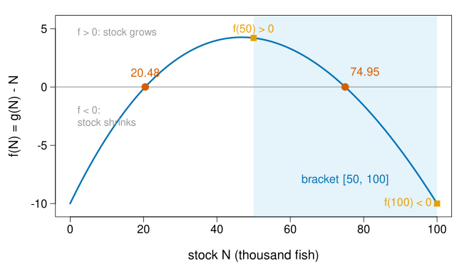
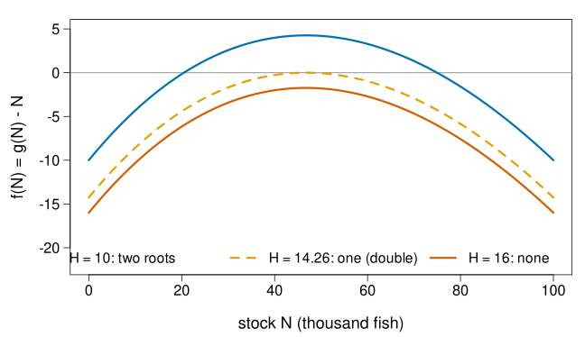
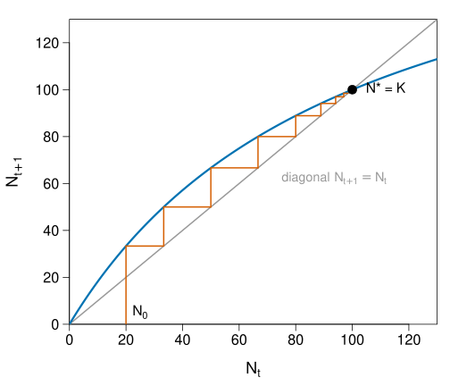
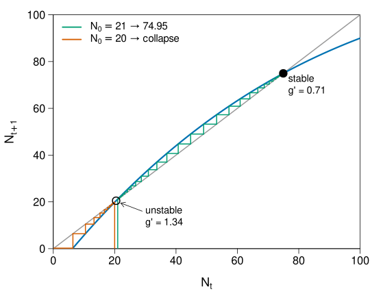
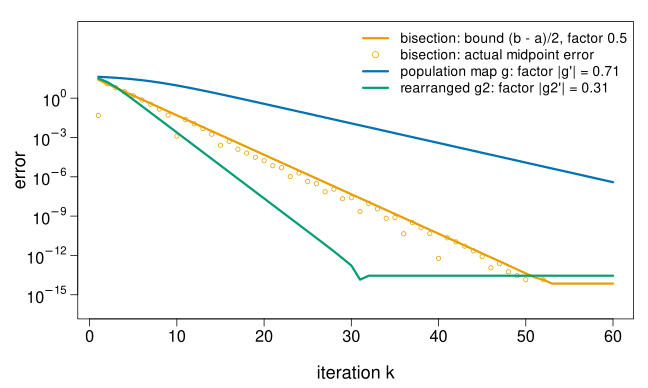
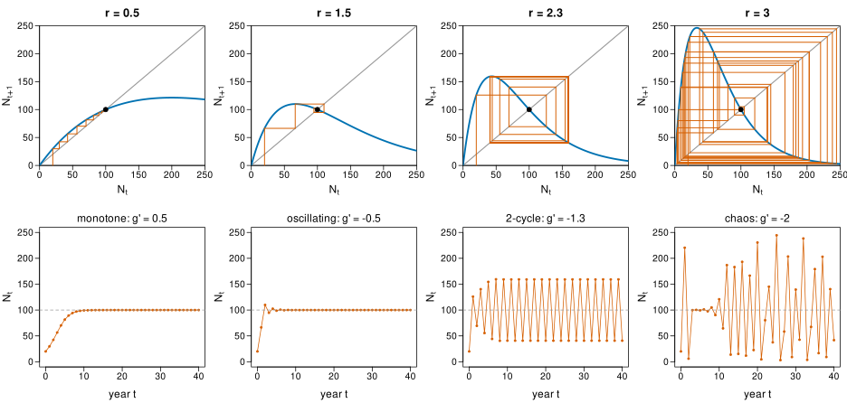

Bisection and fixed-point iteration
Part 2 — Solving nonlinear equations
About this lecture
Part 2 is about solving one equation f(x) = 0 when there is no formula for x. This lecture covers the two simplest methods. Both are slow, and both are worth knowing well.
- Bisection: trap the root in a bracket [a, b] where f changes sign, and halve the bracket until it is small. Guaranteed to converge; gains one binary digit per step.
- Fixed-point iteration: rewrite the equation as x = g(x) and repeat x_{k+1} = g(x_k). Converges when |g'(x^*)| < 1, with error shrinking by that factor each step.
- Stopping criteria, and how each method fails: no sign change, a double root, a repelling fixed point, oscillation, chaos.
Biology: discrete-time population models. A population that is iterated year by year is a fixed-point iteration. Its steady states are roots, the cobweb plot shows whether they are reached, and |g'(N^*)| < 1 is the condition for a stable population.
Part 2: solving f(x) = 0
A root of f is a number x^* with f(x^*) = 0. Most questions of the form “for which x does … hold?” are root problems:
- Which drug dose gives 50 % response? Root of \text{response}(d) - 0.5.
- Where does a population stop changing? Root of N_{t+1} - N_t.
- Which parameter maximises a likelihood? Root of its derivative.
Linear and quadratic equations have formulas. Almost nothing else does: x\,e^{x} = 2, \;x = \cos x, or a fifth-degree polynomial have no formula in terms of +,-,\times,/, roots, \exp and \log.
So we iterate: produce numbers x_0, x_1, x_2, \dots that approach x^*, and stop when close enough.
- A bracket is an interval [a, b] with f(a) and f(b) of opposite sign. If f is continuous, a root lies inside.
- Two questions for every method: does it converge, and how fast (Convergence and cost)?
A harvested fish stock
The Ricker model for a fish stock N_t (thousands of fish) in year t, with a fixed annual catch H:
N_{t+1} = g(N_t) = N_t\, e^{\,r(1 - N_t/K)} - H, \qquad r = 0.5,\; K = 100,\; H = 10
r <- 0.5; K <- 100; H <- 10 # growth rate, capacity, catch (thousand fish)
g <- function(N) N * exp(r * (1 - N / K)) - H # stock next year
N <- numeric(41); N[1] <- 30 # 40 years, starting from 30
for (t in 1:40) N[t + 1] <- g(N[t])
round(N[c(1, 6, 11, 21, 41)], 3) # years 0, 5, 10, 20, 40
# [1] 30.000 47.266 65.664 74.583 74.952- Without fishing, the stock settles at K = 100. With a catch of 10 per year it seems to settle near 74.95.
- Is there a lower steady state? What catch can the stock sustain? Simulating many starts is slow and does not answer this.
Steady states are roots
A steady state N^* does not change: g(N^*) = N^*. Equivalently, N^* is a root of
f(N) = g(N) - N = N\left(e^{\,r(1-N/K)} - 1\right) - H .

- Two roots: about 20.5 and 75.0. No formula gives them: N appears both outside and inside the exponential.
- f(50) > 0 and f(100) < 0: the interval [50, 100] is a bracket for the upper root.
Brackets: a sign change traps a root
Intermediate value theorem. If f is continuous on [a, b] and f(a), f(b) have opposite signs, then f(x^*) = 0 for some x^* in [a, b].
f <- function(N) g(N) - N
f(c(0, 25, 50, 75, 100))
# [1] -10.00000000 1.37478537 4.20127083 -0.01386602 -10.00000000- Sign changes between 0 and 25, and between 50 and 75: two brackets, [0, 25] and [50, 75].
- f(0) and f(100) have the same sign: [0, 100] is not a bracket, although it contains two roots.
- A sign change needs only the sign of f, not its size or its derivative. That is what makes bracketing robust.
Bisection by hand
Take the midpoint m = (a+b)/2. Keep the half where the sign changes. Repeat.
| k | a | b | m | f(m) | keep |
|---|---|---|---|---|---|
| 1 | 50 | 100 | 75 | -0.0139 | [a, m] = [50, 75] |
| 2 | 50 | 75 | 62.5 | +2.89 | [m, b] = [62.5, 75] |
| 3 | 62.5 | 75 | 68.75 | +1.63 | [68.75, 75] |
| 4 | 68.75 | 75 | 71.875 | +0.853 | [71.875, 75] |
| 5 | 71.875 | 75 | 73.4375 | +0.431 | [73.4375, 75] |
- The bracket width goes 50, 25, 12.5, 6.25, 3.125, 1.5625: halved each step.
- Step 1 landed within 0.05 of the root, yet bisection threw that luck away: it only looks at the sign of f(m).
Bisection in R
bisect <- function(f, a, b, tol = 1e-8, maxit = 100) {
fa <- f(a); fb <- f(b)
if (sign(fa) == sign(fb)) stop("f(a) and f(b) must have opposite signs")
for (k in 1:maxit) {
m <- (a + b) / 2; fm <- f(m)
if (sign(fm) == sign(fa)) { a <- m; fa <- fm } else b <- m
if (b - a < tol) break
}
c(root = (a + b) / 2, iter = k)
}
print(rbind(bisect(f, 50, 100), bisect(f, 0, 50)), digits = 10)
# root iter
# [1,] 74.95244250 33
# [2,] 20.48199036 33- One new evaluation of f per step.
signavoids computing f(a)\,f(m), which can underflow or overflow.
How fast? One binary digit per step
After k steps the bracket has width (b - a)/2^k, so the midpoint is within
|m_k - x^*| \le \frac{b - a}{2^{k+1}} .
To guarantee a bracket narrower than tol, we need k \ge \log_2\!\big((b - a)/\text{tol}\big) steps:
- Exactly the 33 steps
bisecttook, known in advance: it does not depend on f at all. - Error factor \tfrac12 per step = linear convergence with rate \tfrac12: about 0.3 decimal digits per step, 3.3 steps per digit, ~50 steps for full double precision.
- Guaranteed, but slow: each step uses only one bit of information (a sign).
When to stop
print(bisect(f, 50, 100, tol = 1e-20, maxit = 200), digits = 10)
# root iter
# 74.9524425 200.0000000- With
tol = 1e-20the loop never stops by tolerance: near 75, neighbouring doubles are 2^{6-52} \approx 1.4\times10^{-14} apart, and the bracket cannot shrink below that gap (How computers store numbers). - Use a relative tolerance as well: stop when b - a < \text{tol}\cdot\max(1, |m|), with tol no smaller than about 10^{-15}.
- Always have a maximum number of iterations, and report when it was hit.
- A small |f(m)| alone is not a safe stopping rule: |f| can be tiny far from a root if f is flat (and huge next to it if f is steep). Bisection stops on the bracket width.
When bisection fails

- Raise the catch: the two roots move together, merge at H \approx 14.26 (a double root: f touches 0 without changing sign) and vanish. Above that, no steady state: the stock collapses.
- No sign change → bisection cannot start. A grid search for sign changes misses double roots.
- Two roots in one interval → no sign change either.
- A pole fakes a sign change: on f(x) = 1/(x-1) over [0, 3], bisection “converges” to x = 1.
Check: evaluate f at the returned root. |f| \approx 0? For 1/(x-1) it is about 10^{8}.
Fixed-point iteration: x = g(x)
A fixed point of g is a number x^* with g(x^*) = x^*. Fixed-point iteration is
x_{k+1} = g(x_k), \qquad k = 0, 1, 2, \dots
A discrete-time population model is a fixed-point iteration. Beverton–Holt, with R = 2, K = 100:
N_{t+1} = g(N_t) = \frac{R\,N_t}{1 + (R-1)N_t/K}
The cobweb plot

Draw y = g(x) and the diagonal y = x. Fixed points are where they cross.
- Start at x_0 on the horizontal axis.
- Go vertically to the curve: height g(x_0) = x_1.
- Go horizontally to the diagonal: now at x = x_1.
- Repeat from step 2.
The staircase climbs to N^* = K = 100: each step is shorter than the one before.
Why it converges: |g'(x^*)| < 1
Let e_k = x_k - x^*. Taylor around the fixed point, using g(x^*) = x^*:
e_{k+1} = g(x_k) - g(x^*) \approx g'(x^*)\,(x_k - x^*) = g'(x^*)\, e_k .
- |g'(x^*)| < 1: the error shrinks by the factor |g'(x^*)| each step. Linear convergence with rate |g'(x^*)|; the fixed point is attracting (stable).
- |g'(x^*)| > 1: the error grows; the fixed point is repelling (unstable).
- 0 < g' < 1: monotone staircase. -1 < g' < 0: alternating spiral.
Beverton–Holt: g'(N) = \dfrac{R}{(1 + (R-1)N/K)^2}, so g'(K) = \dfrac{R}{R^2} = \dfrac1R = 0.5: the ratio the table approached.
Fixed-point iteration in R
fixed_point <- function(g, x0, tol = 1e-10, maxit = 1000) {
x <- x0
for (k in 1:maxit) {
x_new <- g(x)
if (abs(x_new - x) < tol) return(c(root = x_new, iter = k))
x <- x_new
}
warning("no convergence after ", maxit, " steps"); c(root = x, iter = maxit)
}
print(fixed_point(g, 30), digits = 12) # the harvested stock
# root iter
# 74.9524424992 82.0000000000- Stops when the step |x_{k+1} - x_k| is small. That is not the error: here the true error is 2.0\times10^{-10}, twice
tol. - 82 steps for 10 digits: |g'(N^*)| = 0.71 here, so each step gains only -\log_{10} 0.71 = 0.15 digits.
Stable and unstable steady states

For the harvested stock, g'(N) = e^{\,r(1-N/K)}\,(1 - rN/K):
dg <- function(N) exp(r * (1 - N / K)) * (1 - r * N / K)
dg(c(20.48199, 74.95244))
# [1] 1.3358239 0.7086557- Upper steady state: g' = 0.71, attracting.
- Lower one: g' = 1.34, repelling. Start at 21: drift up to 74.95. Start at 20: collapse in 13 years.
- Fixed-point iteration can never find the lower root. Bisection found both.
Same equation, different g
g(N) = N can be solved for “an N” in more than one way. Each gives a different iteration:
g_2(N) = K\left(1 - \frac{\log(1 + H/N)}{r}\right), \qquad g_3(N) = \frac{H}{e^{\,r(1-N/K)} - 1}
g2 <- function(N) K * (1 - log(1 + H / N) / r) # solved for N in the exp
g3 <- function(N) H / (exp(r * (1 - N / K)) - 1) # solved for the N in front
print(fixed_point(g2, 30), digits = 12)
# root iter
# 74.9524424994 26.0000000000
print(fixed_point(g3, 30), digits = 12)
# root iter
# 20.4819903614 23.0000000000- |g_2'| = 0.31 at the upper root: 26 steps instead of 82. |g_3'| = 0.31 at the lower root, so g_3 finds the root the population map could not.
- Same fixed points, different derivatives. Choosing g is choosing the method.
Error against iteration

- Straight lines on a log-y axis: linear convergence. The slope is \log_{10} of the rate: 0.5, 0.71, 0.31.
- All stop at about 10^{-14}: the rounding floor near 75 (\varepsilon \cdot 75).
- Bisection’s actual error (circles) wobbles under its bound.
Checking a fixed-point iteration
The root is unknown, so estimate the rate from the steps d_k = x_{k+1} - x_k: \;d_{k+1}/d_k \to g'(x^*).
x <- numeric(31); x[1] <- 30
for (k in 1:30) x[k + 1] <- g(x[k])
d <- diff(x) # steps x[k+1] - x[k]
round(d[2:30] / d[1:29], 4)[c(1, 5, 10, 20, 29)]
# [1] 1.1894 1.0183 0.8116 0.7128 0.7088
L <- d[30] / d[29]
c(step = abs(d[30]), est_err = abs(d[30]) * L / (1 - L))
# step est_err
# 0.004883929 0.011890220- Ratio settles below 1 → converging, at that rate. Settles above 1 → diverging. Negative → oscillating. Never settles → cycle or chaos.
- Remaining error \approx |d_k|\,\dfrac{L}{1-L}: here 0.0119; the true error is 0.0119.
The Ricker model without harvest
Set H = 0: \;N_{t+1} = N_t\,e^{\,r(1 - N_t/K)}. The steady state is N^* = K for every r, and
g'(K) = e^{0}\,(1 - r) = 1 - r .
| r | g'(K) = 1 - r | prediction |
|---|---|---|
| 0.5 | +0.5 | monotone convergence, rate 0.5 |
| 1.5 | -0.5 | oscillating convergence, rate 0.5 |
| 2.3 | -1.3 | N^* = K repelling: no convergence |
| 3.0 | -2 | N^* = K repelling: no convergence |
Fast-reproducing species (large r) overshoot: a small population produces so many offspring that next year is far above K, then crashes.
Four regimes

Staircase, spiral, a square (a 2-cycle: 159.22, 40.78, 159.22, …), and no pattern at all: chaos.
The bifurcation diagram

For each r: iterate 500 years from N_0 = 20, then plot the next 80 values.
- r < 2: one point, K. At r = 2 the 2-cycle appears, at r \approx 2.53 a 4-cycle, then 8, 16, …, and chaos beyond r \approx 2.69, with windows of order (e.g. a 3-cycle near r = 3.12).
- The boundary of the green region is exactly |g'(K)| = 1.
Chaos: iteration fails, bisection does not
ricker <- function(N, r) N * exp(r * (1 - N / K))
a <- 20; b <- 20 + 1e-10; d <- numeric(80) # two starts, 1e-10 apart
for (t in 1:80) { a <- ricker(a, 3); b <- ricker(b, 3); d[t] <- abs(a - b) }
signif(d[seq(10, 80, by = 10)], 2) # years 10, 20, ..., 80
# [1] 1.3e-07 1.6e-05 4.6e-04 1.8e-02 1.7e+00 1.9e+00 5.2e+00 7.7e+01
uniroot(function(N) ricker(N, 3) - N, c(50, 150))$root
# [1] 100- The difference grows by a factor of 30–100 every 10 years: after ~60 years the two runs are unrelated. Rounding errors (10^{-16}) grow the same way, so the computed trajectory beyond ~100 years is not the true one.
- But the steady state still exists, and a bracketing solver finds N^* = 100 at once.
Library routines: uniroot, brentq
out <- uniroot(f, c(50, 100))
c(root = out$root, iter = out$iter, err = out$root - 74.9524424994439)
# root iter err
# 74.9524412607 7.0000000000 -0.0000012387
out <- uniroot(f, c(50, 100), tol = 1e-12)
c(root = out$root, iter = out$iter, err = out$root - 74.9524424994439)
# root iter err
# 7.495244e+01 9.000000e+00 8.526513e-14uniroot(R) andscipy.optimize.brentq(Python) use Brent’s method: a bracket that always shrinks, like bisection, but with faster interpolation steps that use the size of f. 9 steps instead of 46.uniroot’s default tolerance is \varepsilon^{1/4} \approx 1.2\times10^{-4}: here the error is 1.2\times10^{-6}. Settol.- It also needs a sign change:
uniroot(f, c(0, 100))stops with an error. How Brent’s method works: Newton and secant methods.
Checklist: is my root (or steady state) right?
- Plot f first (or evaluate it on a grid). Count sign changes; look for places where f touches 0 without crossing.
- Bracket check: f(a) and f(b) of opposite sign, else bisection and
unirootcannot start. - Residual check: evaluate f at the answer. A pole gives a huge |f|.
- Tolerance: absolute and relative, no tighter than about 10^{-15}|x|; set
uniroot(..., tol = ). - Iteration cap: always set
maxitand check whether it was reached. - Fixed-point iteration: watch the step ratios d_{k+1}/d_k. Below 1: converging (estimate the error as |d_k|L/(1-L)); above 1 or negative with |.| > 1: diverging or oscillating; no pattern: cycle or chaos.
- Biology: simulating a model only finds stable steady states. Use a root finder for thresholds.
Summary
- Root problems f(x) = 0 rarely have formulas; we iterate. A bracket [a, b] with a sign change traps a root (continuous f).
- Bisection halves the bracket each step: guaranteed, linear rate \tfrac12, \lceil\log_2((b-a)/\text{tol})\rceil steps known in advance. Fails without a sign change (double roots, even number of roots) and is fooled by poles.
- Fixed-point iteration x_{k+1} = g(x_k): e_{k+1} \approx g'(x^*)\,e_k. Converges if |g'(x^*)| < 1, linearly with that rate; monotone if g' > 0, oscillating if g' < 0. Different rearrangements g find different roots at different speeds.
- Stopping: bracket width or step size, absolute + relative tolerance, a maximum number of iterations; the step underestimates the error by L/(1-L).
- Population models are fixed-point iterations: stable steady state ⇔ |g'(N^*)| < 1. Ricker: g'(K) = 1 - r; r > 2 gives cycles and chaos. Unstable steady states (collapse thresholds) need a root finder.
uniroot/brentq: safeguarded bracketing; settol.
Next: Newton and secant methods, where using the derivative gives quadratic convergence, and Brent’s method is explained.